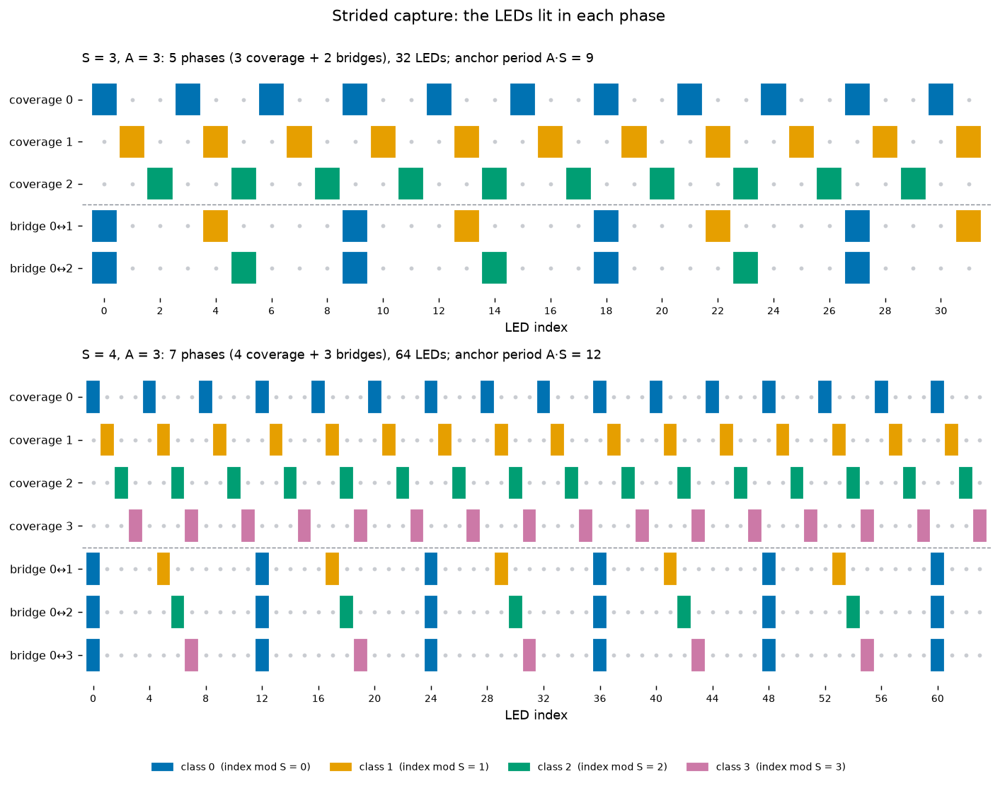

Strided (diffuse) capture: mapping LEDs behind a diffuser¶
Status: implemented (#152 strided capture, which also landed the no-gap-discard fix written as #250; #259 scale guard; #318 warm start and fallback). The strip-prior scale issue (#455) is open, see Failure modes.
A diffuser spreads each LED into a wide, dim, soft-edged spot, and spots next to each other bleed into one blob. The normal capture lights every LED in every frame, and on a diffused fixture the decoder then reads mixed colours from merged blobs and decodes almost nothing. Strided capture lights only a sparse subset of LEDs at a time, spaced far enough apart that their spots stay separate, and rotates through subsets until every LED has been seen. The solver then has to build one rigid fixture out of observations where no frame ever sees more than a fraction of the LEDs. This page covers both halves: the lighting schedule, and what makes the bundle adjustment hold together.
Code map:
Piece |
Where |
|---|---|
Schedule (the one implementation) |
|
Golden (regression pin) |
|
Wire fields |
|
Phase rotation, dense ⇄ strided switch |
|
Per-channel capture (dense curtain + strided rope) |
|
Knobs |
Hardware Setup (per-device stride, per-channel mode), Settings ▸ Behavior ▸ Diffuse capture ( |
Diffuse detector |
|
Image-space simulation |
|
Solver tests |
|
Why lighting a subset helps¶
The mapping code is carried by colour (web/src/code/gray.ts): each cycle is
a white frame, a green frame, then the data frames, and each LED shows its own
codeword, gray(id + 1) wrapped in SEC-DED. The decoder tracks a blob across
the cycle and reads its hue in each frame. Behind a diffuser this breaks in
two separate ways:
Bleed. Neighbouring spots overlap, so one blob holds two or three LEDs showing different codewords. Its hue in each data frame is a mix, and the decoded id is wrong or fails the FEC check.
Dimming. The diffuser spreads a spot’s energy, so the peak drops and the edges flatten. A fixed global threshold misses the dimmer spots, and the ones it catches have weak gradients.
Striding fixes the first. If the lit LEDs are at least S indices apart and
S is larger than the diffuser’s blur in LED pitches, every blob holds one
LED again. The diffuse detector fixes the second. In diffuse mode detect.ts
subtracts a local background before the threshold: a 5×5 tap mean over a
radius of 8 detection pixels by default, scaled by the gain (lcGain, default
1.0, which removes the diffuser’s DC lift fully). The threshold is then low
(default 0.18) because it reads residual contrast, not absolute brightness.
The exposure servo’s threshold adjustment is turned off in diffuse mode so it
doesn’t fight the prefilter.
web/tests/diffuse_sim.test.ts renders a 32-LED line through an
energy-conserving Gaussian diffuser (σ = 2.5 px against an 8 px LED pitch, in
web/src/sim/render.ts) and runs the production blob and decode path on it.
It asserts that each fix only works together with the other:
Configuration |
Decoded fraction (asserted) |
|---|---|
No diffuser, all lit |
≥ 0.95 (the floor) |
Diffuser, all lit, default detector |
≤ 0.1 |
Diffuser, all lit, diffuse detector |
≤ 0.3 (bleed survives the prefilter) |
Diffuser, stride 3, default detector |
≤ 0.3 (isolated spots are too dim) |
Diffuser, stride 3, diffuse detector |
≥ 0.9 × the floor, every record on the right LED |
Striding changes only which LEDs are lit. Every lit LED still sends its full codeword, so a decoded id is the LED’s absolute index in every phase, and records from different phases join by id with no relabelling.
The schedule¶
stride.ts takes two parameters:
S(strideSpacing), the minimum index separation between lit LEDs.S ≤ 1turns striding off (every LED lit).A(anchorDensity), the bridge anchor spacing in units ofS. Values below 3 are clamped to 3.
One schedule has 2S − 1 phases:
Coverage phases
o = 0 … S−1light{ i : i mod S = o }, the LEDs of classo. The lit LEDs are exactlySapart, and theScoverage phases partition the fixture: every LED is lit in exactly one of them.Bridge phases
j = 1 … S−1(phase indexS − 1 + j) work in blocks ofA·SLEDs. Each block lights its first LED (a class-0 anchor) and the LED at offset⌊A/2⌋·S + j(a class-jrep, which lands in class 0’s gap). Only2/(A·S)of the LEDs are lit.
A ≥ 3 keeps every bridge’s lit LEDs at least S apart. The rep sits at
⌊A/2⌋·S + j from its anchor and (A − ⌊A/2⌋)·S − j from the next anchor.
With A = 2 that second gap is S − j, which is less than S. With A ≥ 3
it’s at least S + 1.
For S = 3, A = 3 (block size 9, rep offset 3 + j):
Phase |
Kind |
Lit LEDs (first 18) |
|---|---|---|
0 |
coverage, class 0 |
0, 3, 6, 9, 12, 15 |
1 |
coverage, class 1 |
1, 4, 7, 10, 13, 16 |
2 |
coverage, class 2 |
2, 5, 8, 11, 14, 17 |
3 |
bridge 0↔1 |
0, 4, 9, 13 |
4 |
bridge 0↔2 |
0, 5, 9, 14 |


The lit LEDs in each phase, drawn by //docs:build from
firmware/pattern/testdata/golden_stride.json (the hue-code kernel’s pinned
schedule, the one the phone and the firmware both run). Coverage phases sit above the dashed line, bridges below.
Each bridge lights class-0 anchors with one other class’s reps.¶
The phone and the firmware run the same function. The firmware’s
pattern_color returns black for an LED outside the active phase (not “no
colour”), because the render loop leaves an LED without a colour at its
previous value, and masked LEDs would otherwise stay lit from the previous
phase. On a multi-channel fixture the channels share one LED index space,
so the stride runs over global LED indices.
Why bridges are needed¶
Each coverage class on its own is a set of points that no frame shares with
any other class. The solver doesn’t know a capture was strided: it receives
detection records (LED id, pixel, time) and solves one joint visual-inertial
bundle adjustment over all of them (solver/src/pipeline.rs
reconstruct_vio). There’s no per-phase map and no registration step. So the
question is what ties class j’s points to class 0’s points in that one
problem. There are three ties, of very different strength:
The camera trajectory. Consecutive keyframes are linked by preintegrated IMU factors, including across a phase switch. That link’s uncertainty grows with the gap (see Dead time). Over a 2–3 s decode dead time it’s centimetres, which doesn’t hold mm-scale geometry.
Bridge co-observations. In a bridge-
jframe the camera sees class-0 anchors and class-jreps through the same pose. The anchors are already placed by the coverage-0 frames, so they fix the bridge frames’ poses. The reps then land in class 0’s frame, and because the reps are also class-jLEDs, the coverage-jframes that observed them, and every other class-jLED, follow.The strip prior, when on (the app’s default; Settings ▸ Behavior ▸ Capture). Its rope links connect consecutive mapped ids, and consecutive ids are always in different classes, so every link is a direct inter-class tie. These links are one-sided, though (see Gauge and scale).
The cold-start initialization shows why the second tie matters most.
known_rotation_linear_init (solver/src/vio.rs) solves camera centres and
LED positions from ray membership alone, with gyro-integrated rotations. Its
only link between two frames is a shared LED. Without bridges, the
frame–LED graph splits into one component per coverage class. The gauge pins
one camera centre in one component, and every other component keeps its own
free translation and gets its scale only from the weak depth pins. Bundle
adjustment then has to pull those blocks together through the IMU factors
alone. mapping-solve-paths.md records the result on synthetic sweeps:
without bridges the classes are only IMU-linked and the shapes go wrong.
With bridges the graph is connected through class 0. At the class level the
co-observation graph is a star centred on class 0 (stride.ts: “diameter 2”),
so any LED reaches class 0’s frame in at most two hops: coverage j → bridge
j → class 0. stride.test.ts checks (for S = 4, A = 3 on 300 LEDs) that
every bridge shares at least 3 LEDs with coverage 0 and with its own coverage
class.
flowchart LR
C0(("class 0<br/>(coverage 0)"))
C1(("class 1"))
C2(("class 2"))
Cn(("class S-1"))
C1 ---|"bridge 0↔1:<br/>anchors + class-1 reps"| C0
C2 ---|"bridge 0↔2"| C0
Cn ---|"bridge 0↔S-1"| C0
Only class 0 is a hub. Classes 1 and 2 are never lit together, so a shape error between them goes through class 0, which gives the “bounded degrees of intraframe association” the schedule was designed for. It also means class 0 is observed far more than the others: in the coverage-0 phase and as anchors in every bridge.
Group capture¶
Multi-fixture localization (web/src/geom/groupCode.ts,
multi-fixture-localization.md) registers
fixtures whose maps are already known. A diffuse member there lights only
coverage phase 0 and doesn’t rotate, because a sparse, well-spread subset is
enough to locate a known map.
The capture side¶
Phase rotation¶
capture.ts starts a diffuse capture with start_mapping options
{strideSpacing, anchorDensity, stridePhase: 0}. A 2 s tick (the same one
that handles exposure telemetry and code renegotiation) advances the phase
once it has been held for
dwell = max(3000 ms, 4 × cycleFrames × bitPeriodMs)
by sending configure {stridePhase}. The firmware keeps the session’s S and
A and restamps the pattern epoch. The phone rebuilds its decode pipeline on
the new epoch. Detections already collected stay valid. The phase wraps modulo
2S − 1 for as long as the capture runs. The rotation skips a tick while
another reconfigure is in flight, and both go through the same
applyReconfigure and renegotiating path.
cycleFrames is 2 + ⌈bits / log₂(symbols)⌉ (the sync frames plus the data
frames), and bits is the SEC-DED codeword length for the LED count. Some
example dwells at bitPeriodMs = 100 (a 30 fps camera):
LEDs |
Alphabet |
Bits |
Cycle |
Dwell per phase |
|---|---|---|---|---|
300 |
2 symbols |
14 |
16 frames, 1.6 s |
6.4 s |
300 |
4 symbols |
14 |
9 frames, 0.9 s |
3.6 s |
650 |
2 symbols |
15 |
17 frames, 1.7 s |
6.8 s |
650 |
4 symbols |
15 |
10 frames, 1.0 s |
4.0 s |
The tick is 2 s, so a phase actually lasts up to 2 s past the dwell.
Live switching and per-channel capture¶
Dense ⇄ strided mid-capture. The Diffuse capture toggle on the capture screen persists the mode and, while capturing, sends
configure {strideSpacing, anchorDensity, stridePhase: 0}(or{strideSpacing: 0}to go dense). The phase rotation and the detector (threshold, prefilter gain) switch only once the device has confirmed, so the pattern and the decoder always agree.Stride control on the calibrate screen. It re-strides the running code and restarts at phase 0.
Per-channel capture (
channelCapture.ts). A fixture with a dense curtain on one channel and a diffused rope on another runs as stages of one session, because the firmware mask can only express “LED < ledCount, and on the stride phase”. First comes a regular stage over the leading run of regular channels, stride off. It hands over after 20 s once 85 % of its LEDs have decoded, or at 60 s. Then a strided stage over every LED, using the largest stride of the strided channels. The code space is pinned to the whole fixture from the start, so ids and timing are the same in both stages and the records join into one solve. The strided stage strides the regular channels too. Those are extra observations of LEDs already mapped, and they tie the two stages together the way bridges tie phases. After the solve,fillChannelGapsfills unmapped LEDs within their own channel.Profiles. The settings that worked (diffuse,
S,A, threshold, exposure) are saved with the map’s capture profile and replayed on the next re-map of that fixture.
Decode-lock dead time, and why no observation is ever dropped¶
After every phase switch the newly lit LEDs produce nothing until the decoder has tracked each of them through a full code cycle from the sync frames. The pipeline also restarts on the new epoch. So every switch is followed by a gap with no records, typically about 1–3 s. In the strided stretch of a capture that’s a regular sawtooth of gaps, one per phase.
The solver used to have a time-gap segment filter (keep_dominant_segment)
that kept only the richest stretch between gaps, plus a retry when a gap
diverged. On strided captures it kept one phase: 12 of 36 LEDs. The fix
(written as #250, landed with #152) removed it from both
solver/src/pipeline.rs and the Python reference
pi/reconstruction/reconstruction/vio_api.py, and fixed the problems it had
been hiding:
Gauge on the best-observed frame.
vio::gauge_framepins the frame with the most observations, not frame 0. A stray two-record leading frame once anchored a whole solve and diverged it. In a strided capture the gauge is always a coverage-phase frame, because bridges light far fewer LEDs.Gap-aware IMU factors.
interval_sigmasadds drift terms that grow with the interval (GYRO_DRIFT · Δton rotation,0.5 · ACCEL_DRIFT · Δt²on position) on top of white sample noise. A gap is still IMU-linked, just as loosely as the physics allows. At a 100 Hz IMU stream the position σ is about 0.9 mm over a 0.25 s keyframe interval, 4.7 cm over 2 s and 10 cm over 3 s. That’s why tie 1 above can’t hold the classes together by itself.IMU holes. If the IMU stream itself has a gap over
IMU_HOLE_S(0.25 s) inside an interval, that interval gets no inertial information (σ = 10⁶, layout kept). The rotation seed is held across it, and inertial alignment skips it. A zero-order hold across a hole would make up data.Weighted inertial alignment. Each interval’s rows are weighted against the session’s median covered interval, so one long dead-reckoned gap can’t dominate the scale and gravity estimate. The roll/pitch seed averages the accelerometer within ±0.5 s of the first frame only, so walking before the capture doesn’t leak into the gravity direction.
The rule: a gap only loosens the inertial link across it. It never causes
observations to be discarded. Bad data is the robust loss’s and the outlier
loop’s job. Keyframe decimation (frames_from_records, maxKeyframes 120 for
the live preview and 250 for the final) takes an even subsample of the
distinct frame times that have records. It doesn’t look at gaps, and each
phase gets keyframes in proportion to its duration. The PR-31 tests in
test_interrupted_capture.py, including
test_strided_capture_fuses_every_phase_across_decode_gaps (S = 3, A = 3,
3 s phases, 3.5 s dead time), assert that every record reaches the solution.
regression_tests.rs
a_warm_start_places_leds_the_interim_never_saw uses the synthetic scenario
{"stride": 3, "phaseS": 5, "deadS": 1.0}. Class 2 first lights at 11 s,
after 1 s of dead time. A live-preview solve that ended at 10.5 s never saw
it, and the warm-started final must still place at least 57 of 60 LEDs.
Gauge and scale¶
The visual problem fixes the shape only up to a similarity: rotation and translation (the gauge) and scale.
Gauge. The best-observed keyframe’s rotation and position are pinned at their seeds (residual σ 10⁻⁶) in the bundle adjustment. In the linear init that frame’s centre is the origin. After the solve the map is gravity-levelled, so +Y is up.
Scale comes only from the IMU. Reprojection doesn’t depend on scale. The cold start’s linear
inertial_alignmentestimates scale, gravity and velocities from the vision-only camera path and the preintegrated accelerometer. A scale that would put the cameras outside 5 cm–30 m of the fixture falls back to 0.75 m (plausible_init_scale, #318). After every optimizer stage (the initial solve, each outlier round, the strip pass)solve_vioruns the alignment again with the biases the BA estimated (zero biases pulled scale about 15 % low) and rescales the geometry if the result is more than 2 % off. That a-posteriori re-anchor exists because the accelerometer-bias freedom lets the BA drift the global scale on low-excitation sessions.scaleRelStdErr. The re-anchor also gives a scale standard error[(AᵀA)⁻¹]₀₀. It separates regimes well (good captures ≤ 0.05, near-static ones 0.5+) but understates the true error 2–4×, so it drives warnings only. It doesn’t gate the re-anchor: when it’s high, the BA’s own scale is worse.Strip links can’t hold scale. A strip-prior rope link is zero while two LEDs are within
k · pitch · (1 + tolerance)and linear past that. It penalizes links that are too long and never ones that are too short. A uniform shrink makes every link shorter, so the prior doesn’t resist it, and the pitch itself is estimated from the solve it’s constraining. A diffuse capture leans on the strip prior more than a dense one (each LED is observed less often and bloomed blobs give poor ray vergence), but that doesn’t help with scale.
Dwell-heavy captures dilute scale¶
Diffuse decode tends to lose lock while the phone moves, so a natural way to
capture is to hold still and then hop between vantage points. With no frames
during the hops (scenario.rs DwellHop, hop_frames: false) maps came out
0.2–0.6 of true size. The alignment weighted position rows by IMU noise only,
so vision jitter of the camera centres across many static intervals looked
like motion the IMU had missed. It diluted the scale toward zero (regression
dilution), and the BA kept the init’s scale because it barely moves along
that direction. #259 fits a metric centre-noise τ from the position rows’
residual χ² (a few solve-and-refit rounds) and folds 2τ² into each row’s σ.
On those captures the size went to 0.86–0.98 of true. Matching the pixel σ
didn’t help. mapping-solve-paths.md still lists dwell-and-hop at 0.66 of
true size on its sweep, so treat this regime as improved, not solved.
How to move during a strided capture¶
Rotation is driven by the clock, not by motion, and each class is observed only while it’s lit (plus anchors and reps in the bridges). That leads to these rules:
Every phase needs its own parallax. Class
ois triangulated only from the frames of coverage phaseo, which last one dwell (3–7 s) per schedule. If you stand still for a phase, that class gets no baseline that time around.Run several full schedules, from different places. A single slow arc across one schedule gives each class only the slice of the arc it happened to be lit for. Repeated sweeps that cover the full range of angles bring each phase back at new vantage points. A full schedule is
(2S − 1) × dwell, so plan for a few of those (see the table below).Keep moving slowly and steadily. Moving fast loses decode lock, and those frames give no records.
Include a few brisk sweeps side to side and up and down. The IMU only measures scale when the phone accelerates, and the solver’s own scale-uncertainty warning asks for exactly this.
Stay at a sensible distance. Under 15 cm median camera distance reads as a collapse, both in the warning and in the degeneracy check.
Choosing S and A¶
S is set per device (Hardware Setup ▸ Diffuse capture ▸ Stride length,
1–16, default 4; per-channel strided mode needs 2 or more). It depends on the
fixture’s LED pitch and diffuser, so it’s saved on the device record. A is
app-wide (Settings ▸ Behavior ▸ Diffuse capture ▸ Anchor density, 3–16 on
the slider, default 3). URL parameters ?stride=, ?anchor=, ?lcgain=,
?threshold=, ?downscale= and ?diffuse=1 override per run.
Choose
Sfrom the blur. The lit spots must be farther apart than the diffuser blends. If neighbouring blobs still merge or decode to wrong ids, raiseS. The spacing is in index space, though: a coil, serpentine or folded strip can put LEDsSindices apart (ork·S) next to each other in space, and those can still merge.Ssets the capture time. There are2S − 1phases, and each LED outside class 0 is lit in one coverage phase plus at most one bridge per schedule. RaisingSmakes the schedule longer and each LED’s observation rate lower, roughly in proportion to2S − 1.
S |
Phases |
One schedule at a 3.6 s dwell |
One schedule at a 6.8 s dwell |
|---|---|---|---|
2 |
3 |
~11 s |
~20 s |
3 |
5 |
~18 s |
~34 s |
4 (default) |
7 |
~25 s |
~48 s |
6 |
11 |
~40 s |
~75 s |
8 |
15 |
~54 s |
~102 s |
16 (max) |
31 |
~112 s |
~211 s |
(Add up to 2 s per phase for the tick.)
Adoesn’t change the capture time. The phase count doesn’t depend on it. It sets how many anchors each bridge lights: one anchor and one rep perA·SLEDs, so a 300-LED fixture atS = 4gets about 25 of each per bridge atA = 3and about 13 atA = 6. Fewer anchors means weaker bridge ties. Keep the default 3 unless the bridge phases show merging (for example on a folded fixture where the anchor and rep blobs land close together in the image), and on short fixtures check that each bridge still shows several anchors in frame.
Failure modes and diagnostics¶
Symptom |
Likely cause |
Where it shows |
|---|---|---|
Few ids decode, blobs merge |
|
Capture HUD decode count. Raise |
Ids decode, but spots are dim or missed |
Detector not in diffuse mode, or the threshold is too high |
Settings ▸ Behavior ▸ Diffuse capture (threshold, local-contrast gain) |
One class is offset, rotated or warped against the rest |
Weak bridge ties: too few anchors in view during bridges, or no parallax during that class’s phase |
Map shape. Move more and run more schedules. |
Shape right, size too small |
Scale dilution (dwell-heavy, gentle motion) |
Map warning “The map’s size is uncertain (±N%)…” when |
Map shrinks to a few cm |
|
Degeneracy verdict ( |
Preview good, final degenerate |
Cold-start scale sign or collapse |
Fixed by #318’s warm start and fallback (mapping-solve-paths.md) |
What the solver reports:
OutputMap.stats.scaleRelStdErris the re-anchor’s relative scale standard error.stats.warningsgets the size-uncertainty warning above 0.1 and the “implausibly close” warning when the solved camera path is under 15 cm from the fixture.diag.rsalso flagsscale-uncertainabove 0.5 as a warning, not a degeneracy, because the shape is still right.The degeneracy verdict (
non-finite,too-few-leds,huge-residual,scale-collapse,scale-blowup) decides between the cold and warm starts in the solver. In the app,decideFinaluses it to keep the best live-preview map when the final comes out degenerate (fallback-degenerateorfallback-failed).The stage trace. Each stage (
initial-cold,initial-warm,outlier-round-N,rollback-to-best-round,strip-prior) records solved LEDs, rms, the re-anchor factor,scaleRelStdErrand, for the initial solves, the degeneracy reasons. With debug mode on, a capture bundle stores it with the exact solver input, andbazel run //solver:replay_bundle -- <file>replays the bundle bit for bit. The bundle’s capture parameters recordstrideSpacinganddiffuse.Synthetic reproduction.
solver_cli --synth '{"stride": 3, "anchorDensity": 3, "phaseS": 5, "deadS": 1.5, …}'generates a strided capture with known ground truth and decode dead time (plusdwell_hop,swapP, noise). Use it to reproduce a field failure before changing the solver.
Known issue: the strip-prior pass can collapse scale (#455)¶
The outlier loop keeps its best-scoring round and rolls back to it. The strip
pass that follows replaces the result unconditionally. On a real 650-LED
capture the outlier stage produced a non-degenerate candidate (433 LEDs,
3.56 px rms), and the strip pass turned it into a scale-collapse (400 LEDs,
6.49 px, median camera distance 6.8 cm). The app then correctly fell back to
an older preview with fewer LEDs, but the solver had already thrown away the
better candidate. The one-sided rope links are one reason the strip pass
can’t resist the shrink. A fix is in progress on another branch. Until it
lands, if a diffused fixture collapses with the strip prior on, capture it
again with Settings ▸ Behavior ▸ Capture ▸ Strip prior off to compare.